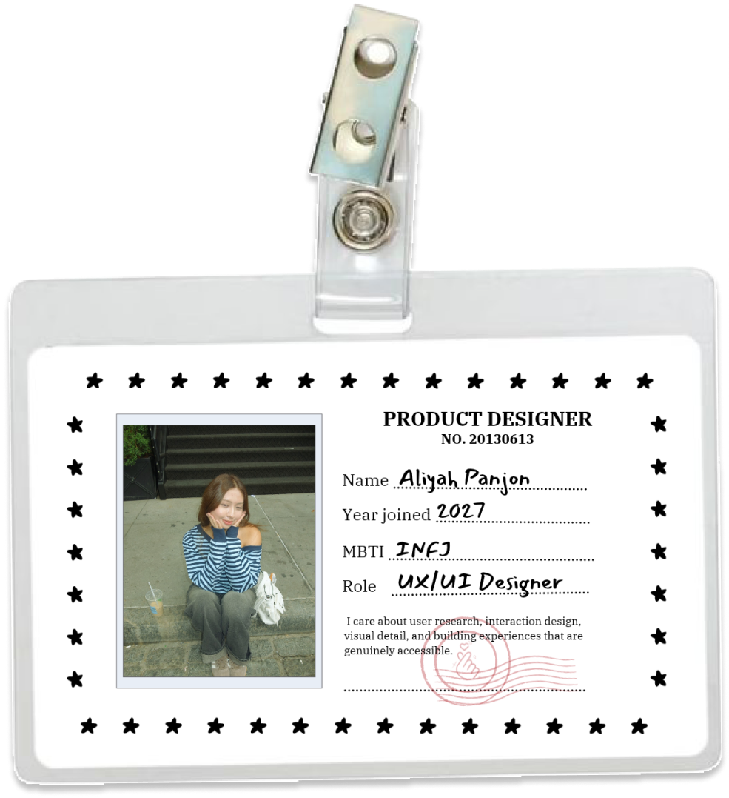

Hi, I'm Aliyah, a Digital Design student at NJIT, with a minor in User Experience.
I'm a UX designer who wants to create experiences for everyone. I care about user research, interaction design, visual detail, and building experiences that are genuinely accessible and intuitive.

Why UX
Creativity and curiosity have always shaped how I approach the world, and I knew I wanted a career that would make a meaningful impact on people while allowing me to keep learning. User experience brought those interests together. Its blend of psychology, research, design, and technology drew me in, and it offered a clear path to creating work that improves how people interact with the products they rely on.
It really clicked for me when I heard how the first ergonomic vegetable peeler came to be. A man watched his wife struggle to grip a regular peeler because of her arthritis, so he designed one that was comfortable for her, and it ended up being easier for everyone. That stuck with me. It showed me how much good design can change someone's day, and it's exactly the kind of work I want to do.
Off the clock, you'll find me
Experience
As a UX Design Intern at Thearis, a fintech startup, I integrated AI tools into my design process, gained experience in product management, and contributed to the launch of a published product. I have also conducted work with the Social X Lab at NJIT, a multidisciplinary human-computer interaction lab, and I currently serve as Vice President of NJIT's SIGCHI chapter.
Design philosophy
Strong design is rarely achieved on the first attempt. It is the result of time, empathy, and deliberate iteration. Research is the backbone of user experience: it grounds my decisions in a clear understanding of the people I am designing for and keeps the work centered on their needs.
Accessibility
Accessibility is fundamental to good design. An experience is only successful when it can be used by everyone, regardless of ability, device, or context. Designing inclusively expands who a product can serve, builds trust with users, and consistently leads to clearer, more usable experiences for all.
Teamwork
The strongest solutions are shaped by many perspectives. I value listening closely to users, designers, developers, and stakeholders, as each brings insight that strengthens the work. Open collaboration and constructive feedback challenge my assumptions and lead to more thoughtful, well-rounded outcomes.